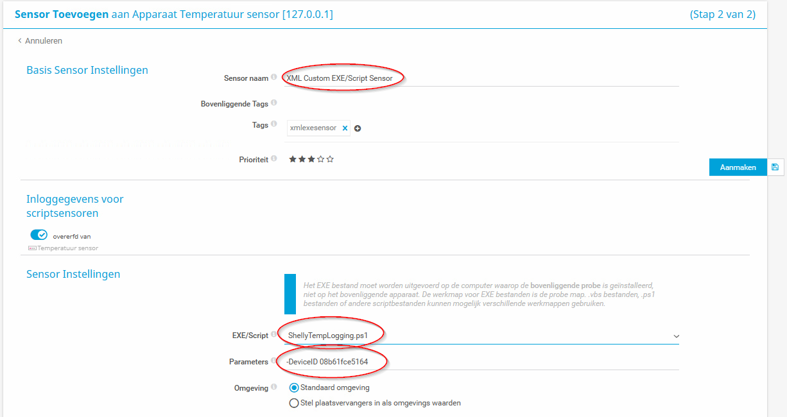

Temperatuur Sensoren
Algemeen
Er wordt op verschillende plekken bij Monta een meting gedaan van de temperatuur. De vraag die bij R&D is gekomen, om te kijken naar een universeel systeem wat goed onderhouden wordt, op het gasten netwerk kan (alleen internet nodig heeft) en centraal kan worden uit gelezen.
Dit is onderzocht en er is gekozen voor Shelly. De reden waarom er voor Shelly is gekozen, is dat zij betrouwbare producten levert, een Europees bedrijf is en veiligheid hoog heeft staan. Dit is ook terug te zien in de geregelde updates die voor de producten uitkomen.
Na een monitoringsperiode is de keuze definitief gemaakt. De keuze is gevallen op de Shelly Plus H&T (Wifi). De Shelly Plus H&T is een draadbare wifi sensor die gevoed wordt via de USB-C stroomadapter.
Installeren Temperatuur sensor
Om de temperatuur sensor te installeren moet je de Shelly Smart Control app installeren op je mobiel. Log daarna in met de credentials uit PasswordState. Voeg een device en eventueel Room (locatie) toe. Bij het toevoegen vraagt de app met welk wifi netwerk het device verbonden moet worden. Dit kan Monta-GAST zijn. De rest spreekt voor zichzelf. Bij Device Information kan je het Device ID uitlezen.
Uitlezen
Om de waarde uit te kunnen lezen is er een Api call die gemaakt kan worden. Er is een PowerShell script gemaakt om dit in PRTG te kunnen uitlezen.
Powershell Script
(het script hieronder is qua opmaak aangepast door DevOps, onderaan kan je het officiele script downloaden)
Dit script ondersteund op dit moment alleen nog de Shelly Plus H&T, zodra de Shelly Pro 1 is getest zal deze worden toegevoegd in het PowerShell script.
<# ShellyTempLogging.ps1
Versie 1.5 – 13-07-2023
Wouter Stolk
Dit script leest de waardes van de temperatuur en de luchtvochtigheid uit van Shelly Cloud.
Meer informatie is te vinden in MontaDocs
Versie 1.0 - Script productie klaar voor Shelly Pro H&T
Versie 1.3 - Documentatie gemaakt
Versie 1.4 - Toevoegen van Parameters DeviceID, ApiKey en URL
Versie 1.5 - Toevoegen van ScanInterval in XML
Versie 1.6 -
##>
##Hieronder kan je een aantal waarde vast opgegeven. Deze waarde zijn ook via een Parameter mee te geven.
param (
[string]$DeviceID = "DEVICEID",
[string]$apiKey = "MWIwNDFidWlk61E241C2148B815BB141C5AEE11A56CCFCEAA358C9FE1BFA1B2E7F8410798A8B3111FFECB807FE17",
[string]$url = "https://shelly-74-eu.shelly.cloud/device/status"
)
$headers = @{
"Content-Type" = "application/x-www-form-urlencoded"
}
$body = "id=$DeviceID&auth_key=$apiKey"
$response = Invoke-RestMethod -Uri $url -Method POST -Headers $headers -Body $body | ConvertTo-Json
## Zet de Response om en lees waardes uit
$object = $response | ConvertFrom-Json
$id = $object.data.device_status.id
$TimeStamp = $object.data.device_status._updated
$humidityString = $object.data.device_status.'humidity:0'
$temperatureString = $object.data.device_status.'temperature:0'
## Zet Humidity om naar leesbare waarde
$humidityRegex = '(?<=rh=)[0-9.]+' # Reguliere expressie om de vochtigheidswaarde te extraheren
$humidity = [regex]::Match($humidityString, $humidityRegex).Value
$PRTGHumi = $humidity
## Zet Temperature om naar leesbare waarde
$temperatureRegex = '(?<=tC=)[0-9.]+' # Reguliere expressie om de temperatuurwaarde te extraheren
$temperature = [regex]::Match($temperatureString, $temperatureRegex).Value
$PRTGTemp = $temperature
## Zet UTC tijd om naar tijdzone AMS
$utcTime = Get-Date -Date $TimeStamp -UFormat "%Y-%m-%d %H:%M:%S"
$amsterdamTimeZone = [System.TimeZoneInfo]::FindSystemTimeZoneById("W. Europe Standard Time")
$TimeStamp = [System.TimeZoneInfo]::ConvertTimeFromUtc([DateTime]::ParseExact($utcTime, "yyyy-MM-dd HH:mm:ss", $null), $amsterdamTimeZone)
$TimeStamp = $TimeStamp.ToString("yyyy-MM-dd HH:mm:ss")
## Tijdelijke variabele
##$PRTGTemp = 50.1
$XMLResult = @"
<prtg>
<interval>300</interval>
<result>
<channel>Temperature</channel>
<unit>custom</unit>
<customunit>celsius</customunit>
<mode>Absolute</mode>
<showChart>1</showChart>
<showTable>1</showTable>
<warning>0</warning>
<float>1</float>
<value>$PRTGTemp</value>
<LimitMaxWarning>28</LimitMaxWarning>
<LimitMaxError>35</LimitMaxError>
<LimitWarningMsg>De servers hebben het warm!!</LimitWarningMsg>
<LimitErrorMsg>De temperatuur is te hoog!!</LimitErrorMsg>
<LimitMode>1</LimitMode>
</result>
<result>
<channel>Humidity</channel>
<unit>Percent</unit>
<mode>Absolute</mode>
<showChart>1</showChart>
<showTable>1</showTable>
<warning>0</warning>
<float>1</float>
<value>$PRTGHumi</value>
<LimitMaxError>70</LimitMaxError>
<LimitMaxWarning>55</LimitMaxWarning>
<LimitWarningMsg>De servers voelen nattigheid!!</LimitWarningMsg>
<LimitErrorMsg>De servers staan in het water!!</LimitErrorMsg>
<LimitMode>1</LimitMode>
</result>
<text>Last update: $TimeStamp</text>
</prtg>
"@
$XMLResult
Parameters
Er zijn verschillende parameters mee te geven in het script. Hieronder een overzicht van de mogelijkheden.
-DeviceID = Het Id van het Device wat je wil uitlezen
-apiKey = De Key van de Api van Shelly Cloud
-url = De URL van de Api van Shelly
Over het algemeen zal alleen de parameter van het DeviceID worden gebruikt.
Examples
ShellyTempLogging.ps1 -DeviceID “123ABC”
ShellyTempLogging.ps1 -DeviceID “123ABC” -apiKey “APIKEY” -url “https://shellycloudurl”
PRTG
Om een sensor in PRTG toe te voegen kan je gebruik maken van de EXE/Script Geavanceerd sensor. 